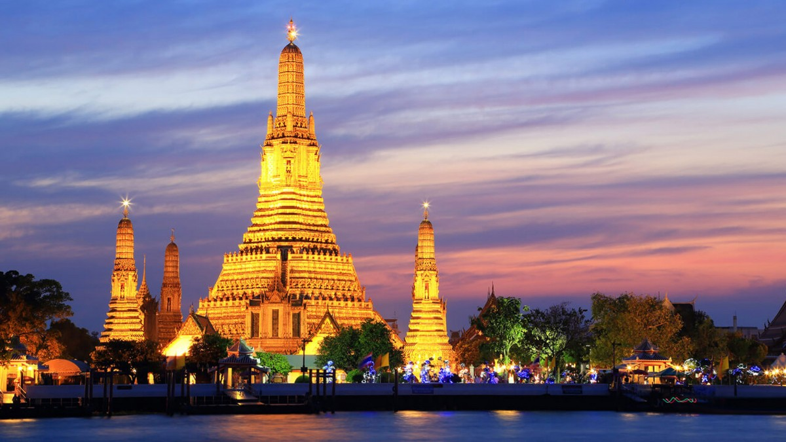

|  |  |
 |
วัดอรุณราชวรารามราชวรมหาวิหาร หรือที่เรียกสั้น ๆ ว่า วัดอรุณ เป็นวัดโบราณ สร้างในสมัยอยุธยา ที่ชื่อวัดแจ้ง เพราะสมเด็จพระเจ้ากรุงธนบุรี |
วัดพระเชตุพนวิมลมังคลาราม คำอ่าน: [วัด-พฺระ-เชด-ตุ-พน-วิ-มน-มัง-คะ-ลา-ราม][1] โดยทั่วไปเรียก วัดโพธิ์ เป็นพระอารามหลวงชั้นเอก ชนิดราชวรมหาวิหาร[2]
|
วัดราชบพิธสถิตมหาสีมาราม เป็นพระอารามหลวงชั้นเอก ชนิดราชวรวิหาร[1] ที่พระบาทสมเด็จพระจุลจอมเกล้าเจ้าอยู่หัวโปรดเกล้าฯ ให้สร้างขึ้นเป็นวัดประจำรัชกาลเมื่อ พ.ศ. 2412 มีพิธีก่อพระฤกษ์ เมื่อ วันที่ 22 มกราคม พ.ศ.2412
|